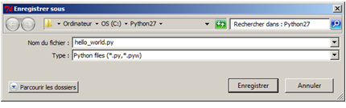
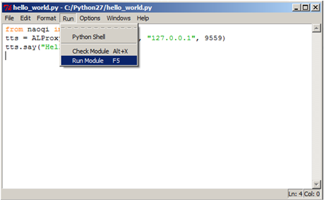

Hello World 4 - using Python¶
Audience¶
| Level | All beginners | Time | 5 min |
| OS | Linux - Windows - Mac | Preparation | 5/15 min |
Preparation time is given for the case you have to install tools prior the tutorial.
Before starting¶
- Make sure you have a robot ready to use. Otherwise, read NAO - Out of the box or Configuring Pepper for the first time.
- Make sure Python and Python SDK are installed on your computer. If it is not the case, see: Python SDK - Installation Guide.
Let’s do it¶
| Step | Action |
|---|---|
| Start your favorite editor, let’s say IDLE, the one automatically installed with Python. | |
| Open a new window. | |
Copy and paste the following code: from naoqi import ALProxy
tts = ALProxy("ALTextToSpeech", "<IP of your robot>", 9559)
tts.say("Hello, world!")
|
|
Replace <IP of your robot> by the IP of your robot. If you don’t know its IP address, press its Chest button, NAO will say it. |
|
Save the file as a Python file.  |
|
Run it.  |
{kind=link}
{kind=link}
{kind=link}
Result¶
Your robot says “Hello, world!”.
How it works¶
This script uses the say method of the ALTextToSpeech module.
ALTextToSpeech is the module of NAoqi dedicated to speech.
The say method makes the robot pronounce the string given in parameter.
For further details about this module, see ALTextToSpeech.
Let’s explain the 3 lines you wrote:
from naoqi import ALProxy
This line imports the module ALProxy.
tts = ALProxy("ALTextToSpeech", "<IP of your robot>", 9559)
This line creates an object called tts. This object will send calls to NAOqi.
- tts is the name we gave to the object instance (could have been myspeechmodule or speakingmodule).
- ALProxy() is a class of objects, allowing you to have acces to all the methods of a module.
- ALTextToSpeech is the name of the module of NAOqi we want to use.
- IP and Port (9559) of the robot are also specified (it was not the case with Choregraphe).
tts.say("Hello, world!")
This line uses the object tts to send an instruction to the NAOqi module.
- tts is the object we use.
- say() is the method.
- “Hello, world!” is the parameter.
What you have learned¶
To make the robot do something, you have to:
- Import the module ALProxy.
- Create an object giving access to one of the NAOqi modules.
- Call one of its available methods.
Outside Choregraphe, IP and Port are mandatory parameters of proxy().
To go further¶
- If you are not familiar with Python language, you should go through the tutorial included in Python distribution.
- To learn how to execute Python scripts on your computer or on your robot, see: Python SDK - Tutorials.
- To discover NAOqi API, its modules and methods, see: NAOqi APIs.
Next step¶
Python is an interpreted language, so it is far slower than a compiled language like C++.
If C++ has no secret for you, or if you strongly want to learn it, Install the C++ SDK.
For further details, see: C++ SDK - Installation Guide.